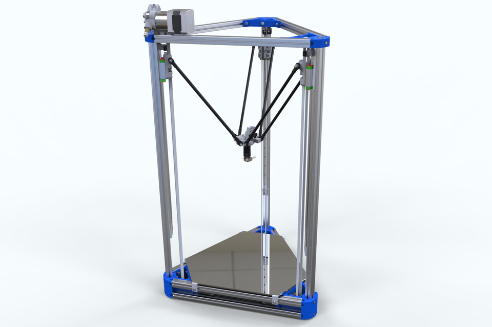

Imprimante 3D Delta
Aceste imprimante folosesc un sistem cinematic bazat pe trei brațe articulate montate pe turnuri verticale dispuse în formă triunghiulară.

Principiul de funcționare:
- Fiecare dintre cele trei turnuri are un motor pas cu pas care controlează înălțimea unui braț.
- Capul de imprimare este conectat la brațe prin bile universale (joints).
- Volumul de imprimare este în formă de cilindru.
Avantaje:
- Viteză mare: Brațele ușoare și cinematică optimizată permit mișcări rapide și precise.
- Estetică simplă: Mai puține componente mecanice în mișcare.
- Lipsa inerției mari: Extruderul este mult mai ușor decât ansamblul imprimantei carteziene.
Dezavantaje:
- Calibrare complexă: Configurarea inițială și ajustările ulterioare pot fi mai complicate.
- Precizie redusă pe margini: Rezoluția și precizia tind să fie mai scăzute pe periferia zonei de imprimare.
- Volume de imprimare limitate: Dimensiunea obiectelor imprimate este restricționată la cilindrul specificat.
Exemple populare:
- Anycubic Predator: Oferă un volum mare de imprimare pentru imprimante delta.
- Flsun Q5: Un model compact, accesibil pentru amatori.